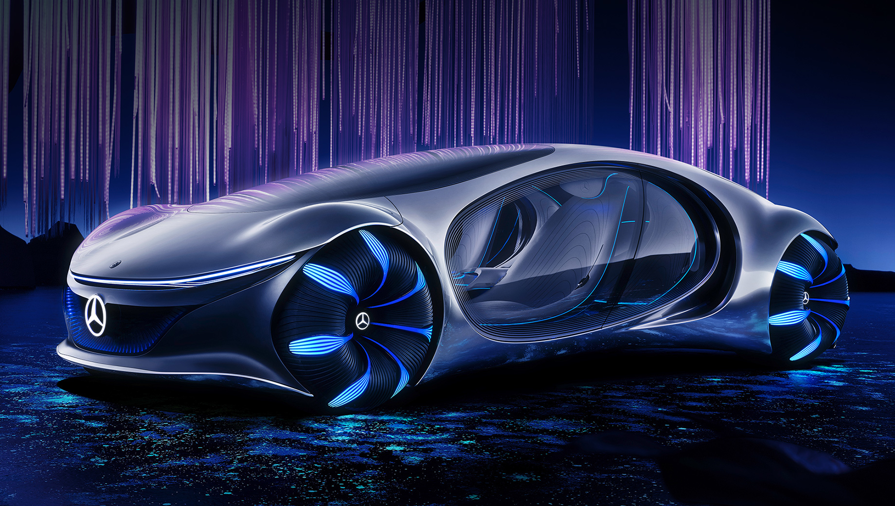
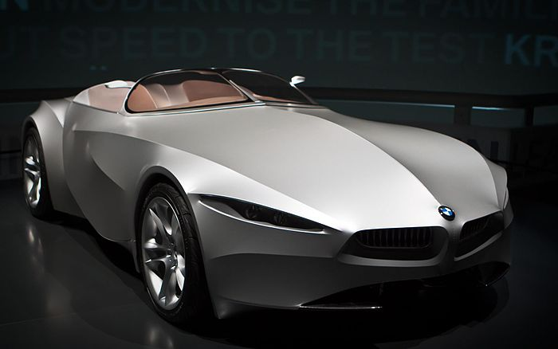

Мерседес

1 октября 1883 Карл Бенц основал компанию «Бенц и Ко. Райнише Газмоторен-Фабрик, Манхайм» (Benz &
Cie.)
в форме открытого торгового общества вместе с бизнесменом Максом Каспаром Розе и коммерсантом
Фридрихом
Вильгельмом Эсслингером. В 1886 году предприятием была создана первая трёхколёсная самоходная
повозка с
бензиновым двигателем.
В декабре 1883 года Готлиб Даймлер защитил собственный «газовый двигатель с зажиганием от горячей
трубки» патентом DRP No. 28022. Также он получил патент DRP No. 28243 на систему «регулирования
оборотов
двигателя с помощью выпускного клапана». Эти два патента послужили основой для первого быстроходного
двигателя внутреннего сгорания. 29 августа 1885 года Готлиб зарегистрировал Daimler Reitwagen
(«верховая
повозка») с «газовым или бензиновым двигателем», получив патент DRP No. 36423[15]. В 1889 году он
представил новый двухцилиндровый V-образный двигатель, развивающий мощность в 1,5 л. с. при 600
об/мин.
Через год, весной 1890 года, Вильгельм Майбах сконструировал первый 4-цилиндровый, четырёхтактный
двигатель. Автомобиль, оснащённый данным силовым агрегатом, обладал весом в 153 кг и развивал
мощность в
5 л. с. при 620 оборотах в минуту. Читать
далее
BMW

BMW AG (рус. Бэ-Эм-Вэ́[2], аббревиатура от Bayerische Motoren Werke AG, с нем. — «Баварские моторные
заводы») — немецкий производитель автомобилей, мотоциклов, двигателей, а также велосипедов.
Председателем компании с 2006 по 2015 год был Норберт Райтхофер, с мая 2015 года — Харальд Крюгер, а
с
18 июля 2019 года — Оливер Ципсе. Главный дизайнер — Йозеф Кабан[3]. Девиз компании — «Freude am
Fahren», с нем. — «С удовольствием за рулём». Для англоязычных стран был придуман также девиз «The
Ultimate Driving Machine» (с англ. — «Идеальная машина для вождения»
BMW AG (рус. Бэ-Эм-Вэ́[2], аббревиатура от Bayerische Motoren Werke AG, с нем. — «Баварские моторные
заводы») — немецкий производитель автомобилей, мотоциклов, двигателей, а также велосипедов.
Председателем компании с 2006 по 2015 год был Норберт Райтхофер, с мая 2015 года — Харальд Крюгер, а
с
18 июля 2019 года — Оливер Ципсе. Главный дизайнер — Йозеф Кабан[3]. Девиз компании — «Freude am
Fahren», с нем. — «С удовольствием за рулём». Для англоязычных стран был придуман также девиз «The
Ultimate Driving Machine» (с англ. — «Идеальная машина для вождения» Читать далее
Bugatti

В 1987 году права на бренд Bugatti, а также более 45000 чертежей и проектов, купил итальянский
предприниматель Романо Артиоли и основал компанию Bugatti Automobili S.p.A.[12] В итальянской
коммуне
Кампогаллиано компания построила завод.
В 1990 году на 63-ем Туринском автосалоне был представлен концепт двухместного купе Bugatti ID 90 от
компании ItalDesign, который опирался на технические чертежи Bugatti[13]. Верх кузова автомобиля
имеет
вытянутую стеклянную конструкцию. Дизайн литых дисков отсылает к Bugatti Type 41 Royale.
В 1909 году Этторе Бугатти основал свою собственную компанию[1]. В качестве завода он использовал
заброшенную красильню в Мольсеме.
Bugatti Type 13 появился в 1910 году и на Гран-при Франции в 1911 году управляемый Эрнестом
Фридрихом
занял второе место, обогнав более мощные автомобили[2].
После Первой мировой войны немного модифицированный Type 13 выиграл Кубок легковых автомобилей в
Ле-Мане
в 1920 году. На основе Type 13 были созданы модели Bugatti Type 15, 17, 22 и 23 отличающиеся разной
длиной шасси. Bugatti Type 22 c 16-клапанным двигателем занял первые четыре места в Гран-при в
Брешии в
1921 году, за что модели Type 13, 15, 17, 22, 23, 27 с 16-клапанными двигателями получили прозвище
«Brescia»[3]. Читать
далее